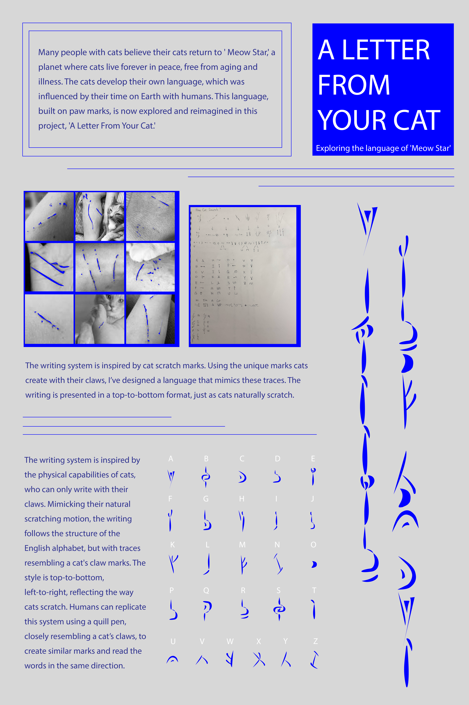

2024
A Letter from Your Cat
Exploring the language of ‘Meow Star’
Inspired by the story of cats returning to ‘Meow Star,’ this project reimagines a writing system created by feline elders trying to reconnect with humans. Each letter mimics the trace of a cat’s claw, written from top to bottom—just as cats scratch. Blue was chosen because it’s one of the few colors cats can perceive.

Concept
Many people with cats believe their cats return to ‘Meow Star,’ a planet where cats live forever in peace, free from aging and illness. The cats develop their own language, which was influenced by their time on Earth with humans. This language, built on paw marks, is now explored and reimagined in this project, ‘A Letter From Your Cat.’
The Writing System
The writing system is inspired by cat scratch marks. Using the unique marks cats create with their claws, I’ve designed a language that mimics these traces. The writing is presented in a top-to-bottom format, just as cats naturally scratch.
The writing system is inspired by the physical capabilities of cats, who can only write with their claws. Mimicking their natural scratching motion, the writing follows the structure of the English alphabet, but with traces resembling a cat’s claw marks. The style is top-to-bottom, left-to-right, reflecting the way cats scratch. Humans can replicate this system using a quill pen, closely resembling a cat’s claws, to create similar marks and read the words in the same direction.